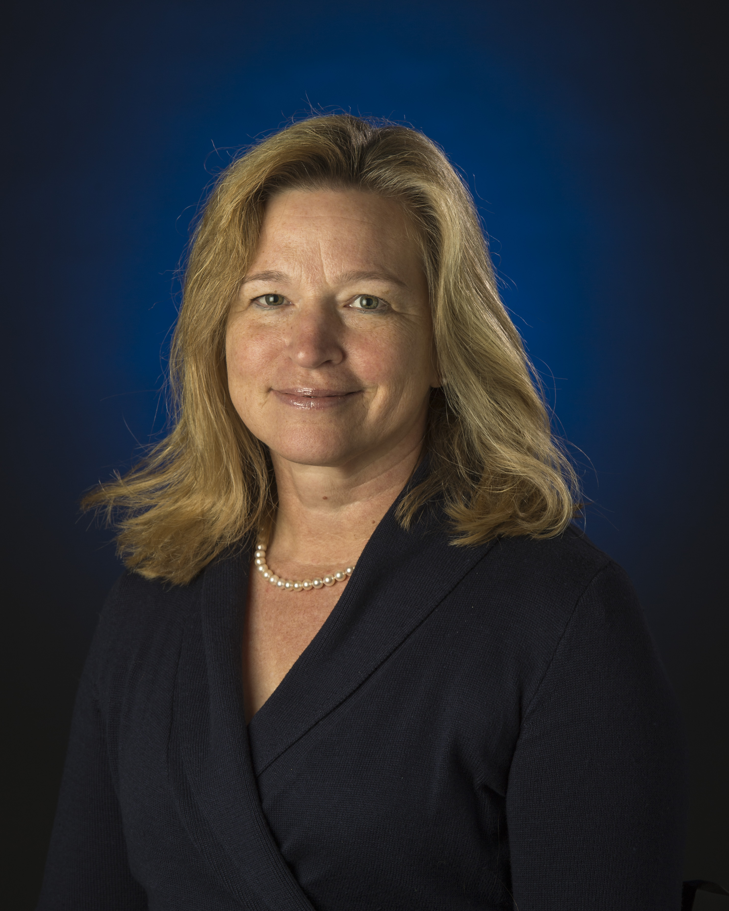
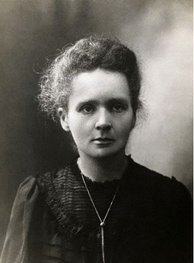

Our Favourites

Welcome to the world of amazing and inspirational women in STEM!
Dr. Ellen Stofan
 Dr. Ellen Stofan was appointed NASA chief scientist on August 25, 2013, serving as principal advisor to NASA Administrator Charles Bolden on the agency's science programs and science-related strategic planning and investments. Prior to her appointment, Stofan was vice president of Proxemy Research in Laytonsville, Md., and honorary professor in the department of Earth sciences at University College London in England. Her research has focused on the geology of Venus, Mars, Saturn's moon Titan, and Earth. Stofan is an associate member of the Cassini Mission to Saturn Radar Team and was a co-investigator on the Mars Express Mission's MARSIS sounder. She also was principal investigator on the Titan Mare Explorer, a proposed mission to send a floating lander to a sea on Titan. Her appointment as chief scientist marks a return to NASA for Dr. Stofan. From 1991 through 2000, she held a number of senior scientist positions at NASA's Jet Propulsion Laboratory in Pasadena, Calif., including chief scientist for NASA's New Millennium Program, deputy project scientist for the Magellan Mission to Venus, and experiment scientist for SIR-C, an instrument that provided radar images of Earth on two shuttle flights in 1994.
Dr. Marie Curie
 When you mention extraordinary women in STEM, it is incomplete without mentioning Marie Curie. Her revolutionary work in the field of science paved a long way for all the women in STEM. In 1903 Marie and her husband, Pierre were awarded the Nobel Prize for Physics jointly with Henri Becquerel for their combined, though separate, work on radioactivity. In the same year, Marie passed her doctorate thesis in Physics. Her determination and remarkable endeavours led to a second Nobel Prize in 1911, this time in chemistry for creating a means of measuring radioactivity. Not long after, Sorbonne built the first radium institute with two laboratories; one for study of radioactivity under Marie Curie's direction, and the other for biological research into the treatment of cancer.